延伸練習・AI 繪圖紀錄
用對話修正 AI 繪圖：CMOS 邏輯閘案例
請 AI 畫一張說明用的圖，第一版常常「看起來很像」，細節卻是錯的。這份講義收錄一段完整的對話：從一張手繪草圖開始，經過 16 個版本，畫出反相器、NAND 與兩種 XOR 邏輯閘。你會看到每一版錯在哪裡、使用者怎麼指出來，以及怎麼把做對的畫法存成規則。
南臺科技大學商管學院 · AI Agent 實作講義 · 單元 05
姓名：________________ 班級：________________ 日期：________________
01這份紀錄怎麼讀
這是一段真實的 AI 繪圖對話紀錄：使用者先請 AI 把一張手繪的電路草圖重畫成教科書風格的圖，再延伸畫 NAND 與 XOR 邏輯閘，前後一共產生 16 個版本。
你不需要看懂電路。請把注意力放在三件事：AI 畫錯了什麼、使用者怎麼把錯誤說清楚、下一版有沒有真的改對。同樣的方法也能用在你自己要畫的圖，例如報告中的流程圖、組織架構圖或簡報示意圖。
使用者對 AI 說的話
以中文呈現；下方小字是原始英文（原對話用英文練習寫提示詞）。
AI 的說明
整理成中文，保留原意；重複或與繪圖無關的段落已略過。
AI 實際送出的指令
英文原文，預設收合。可以觀察 AI 怎麼把你的一句話擴寫成詳細的繪圖規格。
16 個版本一覽
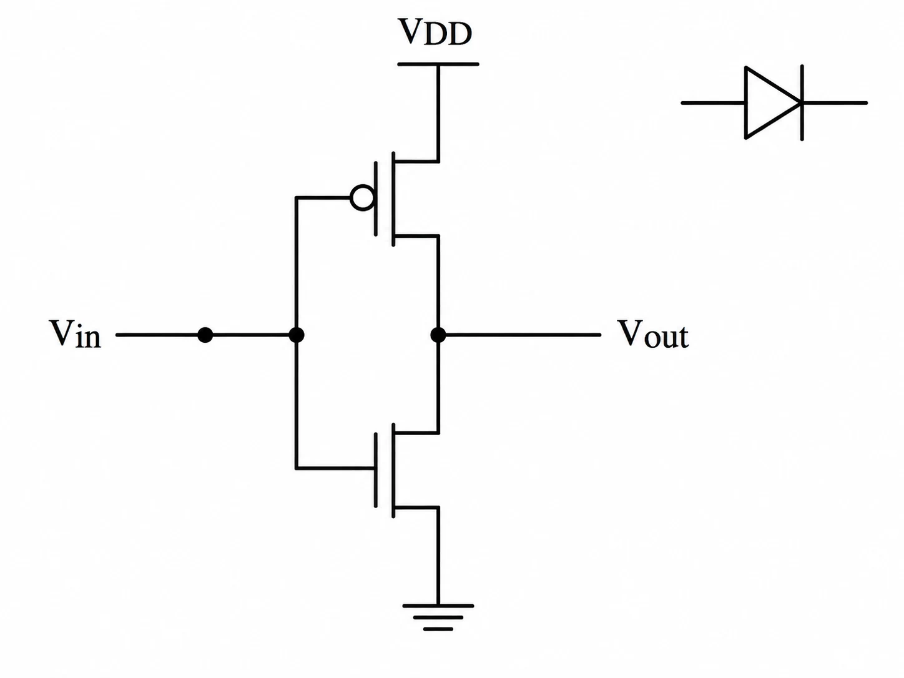
01 有錯誤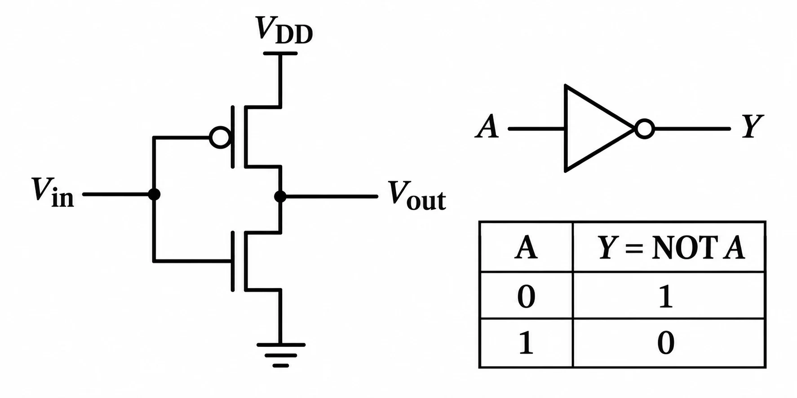
02 過渡版本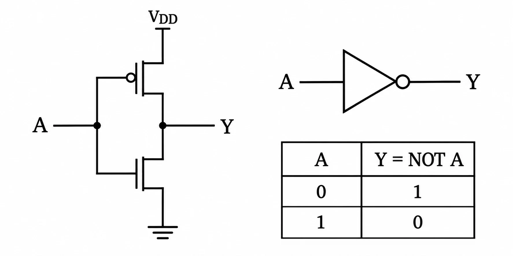
03 最後版本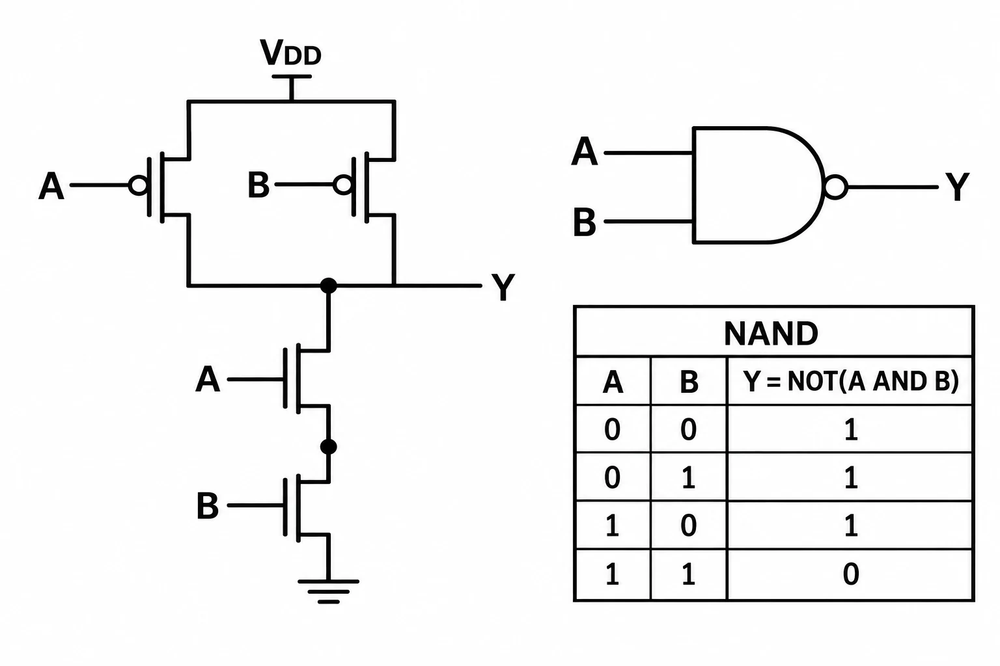
04 有錯誤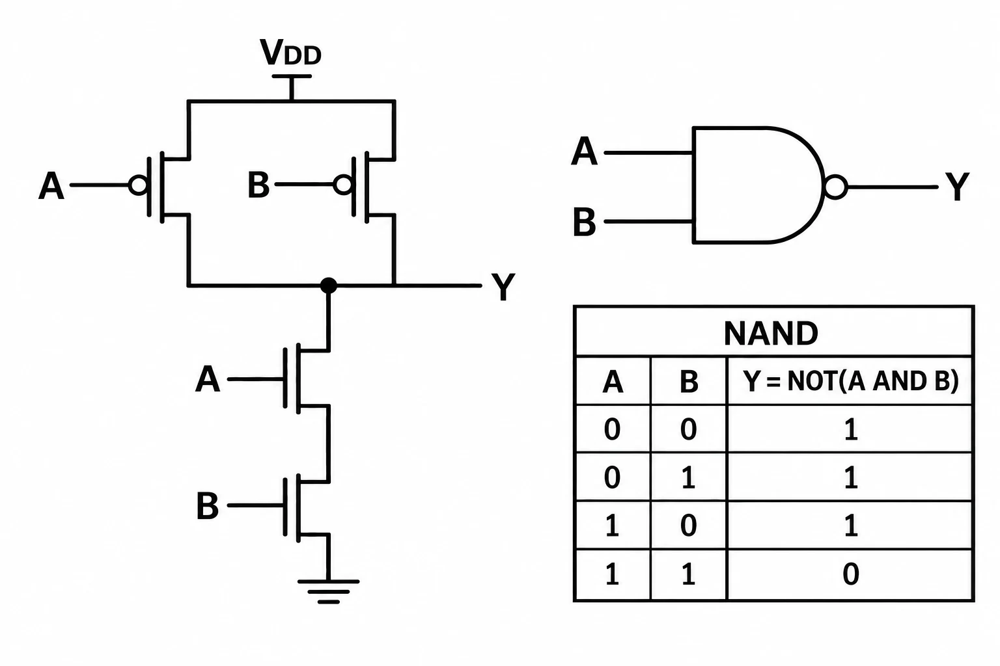
05 過渡版本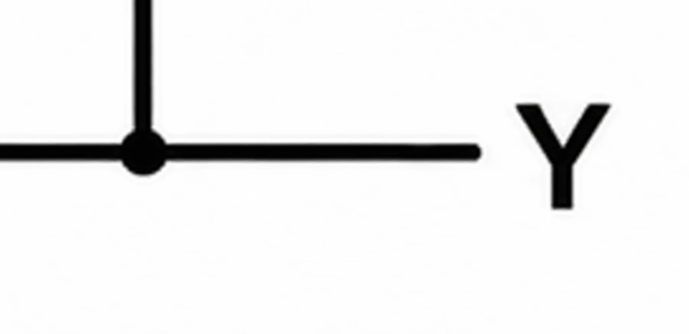
06 局部圖 07 過渡版本
07 過渡版本 08 過渡版本
08 過渡版本- 09 最後版本
- 10 有錯誤
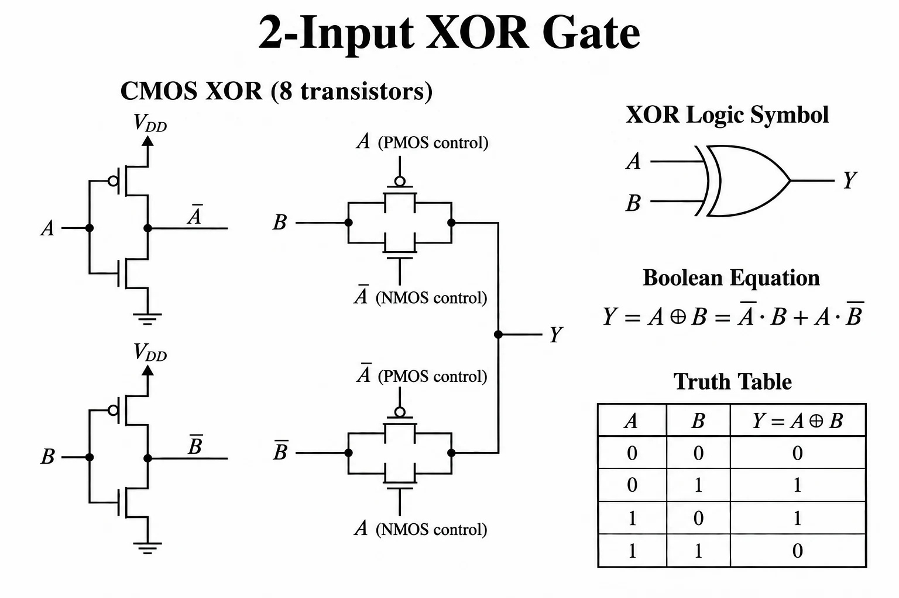
11 過渡版本- 12 最後版本
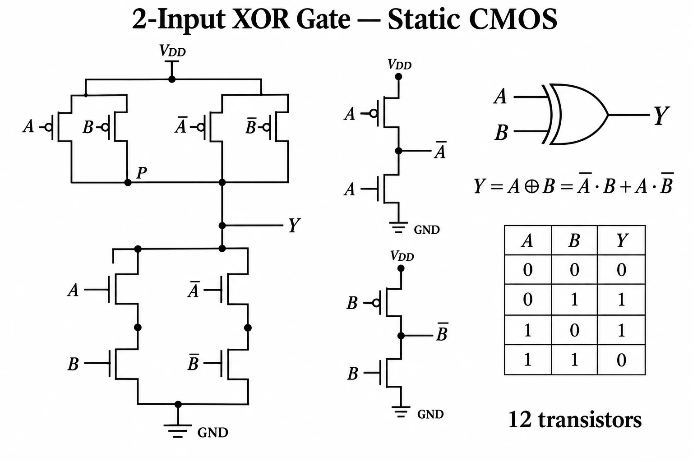
13 有錯誤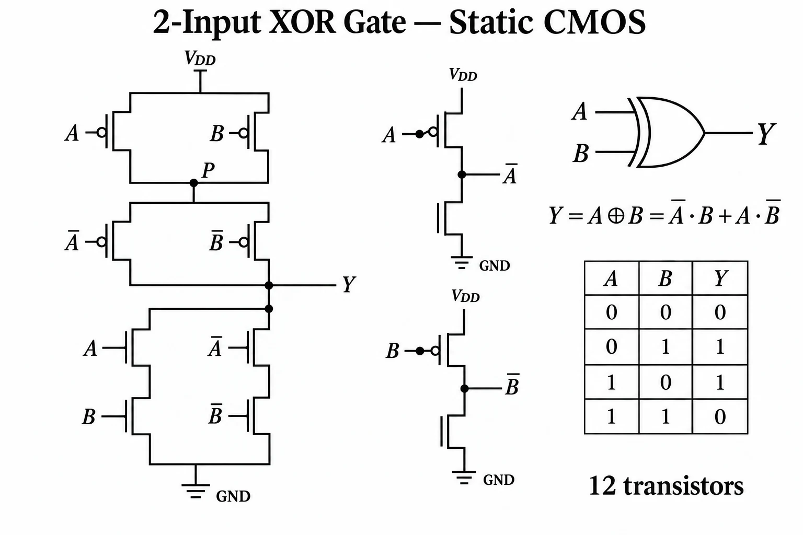
14 過渡版本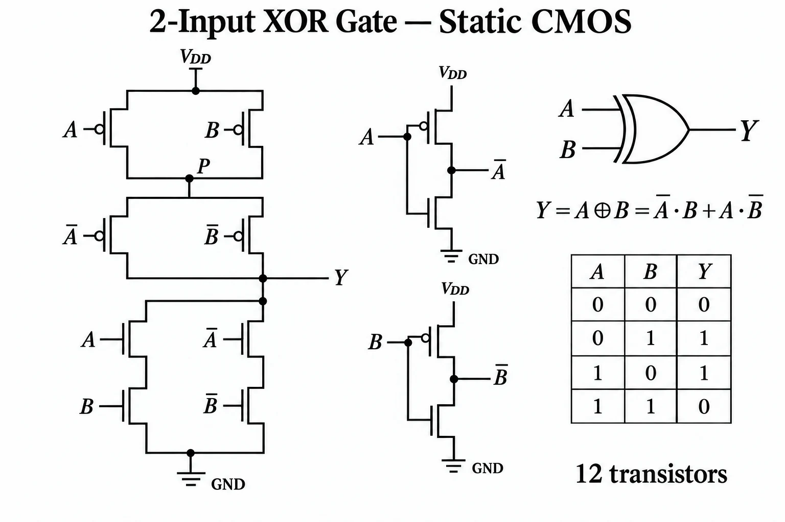
15 過渡版本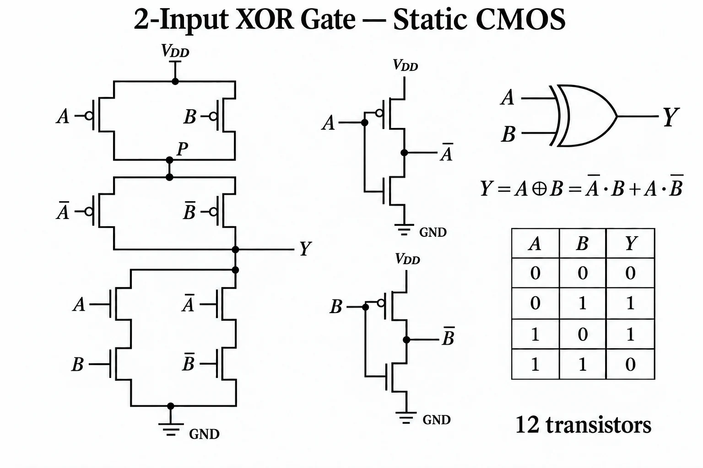
16 最後版本
請使用四張最後版本：反相器、NAND、傳輸閘 XOR、靜態 CMOS XOR。早期版本保留下來，是為了讓你看到錯誤是怎麼被發現和修正的。
02反相器：AI 的猜測要先確認
使用者丟出一張手繪草圖，先問 AI 這是什麼，再請它重畫。第一版把右上角的小符號畫成二極體；使用者指出那其實是反相器符號，並追加真值表。
🤖 AI 回覆
這看起來像手繪的 CMOS 反相器：上方是接電源的 PMOS，下方是接地的 NMOS，兩個電晶體的閘極相連作為輸入；右側相連的端點則是輸出。
右上角的小符號可能是二極體，但圖中看不出它是否與反相器相連。
🧑 使用者提示
請重畫這張圖。
原始英文Redraw the figure.
🤖 AI 回覆
我會把它重畫成乾淨的 CMOS 反相器電路圖；那個像二極體的符號連接方式不明，會分開畫。
圖片生成提示詞｜第 01 版（AI 實際送出的英文原文）
Create a clean, textbook-style black-and-white circuit schematic on a plain white background, landscape 4:3. Redraw the main hand-drawn circuit as a CMOS inverter: upper PMOS transistor connected from VDD at top to a shared output node at the right; lower NMOS transistor connected from that shared output node to a ground symbol at bottom; both transistor gates connected together to an input wire entering from the left. Use standard clear MOSFET schematic symbols and neat straight thin black lines. Label input 'Vin', output 'Vout', top supply 'VDD', bottom ground. In a separate small area at the top right, include an isolated diode symbol matching the extra disconnected symbol in the source sketch, with no wire connecting it to the inverter. No decorative elements, no color, no explanatory text beyond the four labels. Ensure electrical topology is clear and correct.紅色標記對應的修正：「那個看起來像二極體的符號是反相器。請重畫，並在圖中加上真值表。」
- ①被誤畫成二極體：其實是反相器符號
AI 第一次回覆就說了「可能是二極體」，接著照自己的猜測畫圖。看到「可能」「看起來像」這類字眼，就是該先確認的地方。
🧑 使用者提示
那個看起來像二極體的符號是反相器。請重畫，並在圖中加上真值表。
原始英文The diode-like symbol is an inverter. Redraw it and add a truth table to the figure.
🤖 AI 回覆
我會更新圖片，同時呈現 CMOS 電晶體電路、反相器邏輯符號與真值表。
圖片生成提示詞｜第 02 版（AI 實際送出的英文原文）
Edit the existing image into a precise, clean textbook infographic on white background. The small symbol at the upper right is NOT a diode: it is the standard logic inverter (NOT gate), drawn as a triangle pointing right with a small output bubble, with input wire on left and output wire on right. Keep the main CMOS inverter schematic on the left: PMOS above NMOS, common gates as Vin entering from left, joined drains at right labeled Vout, PMOS source to VDD and NMOS source to ground. On the right side, show the corresponding inverter logic symbol clearly, then a small truth table beneath it with headers 'A' and 'Y = NOT A', rows '0 | 1' and '1 | 0'. Clear black strokes, accurate conventional symbols, balanced layout, readable labels, no extra components or decorative details.圖片生成提示詞｜第 03 版（AI 實際送出的英文原文）
Create a clean educational circuit figure on a white background, landscape layout. Left half: conventional CMOS inverter transistor schematic, with PMOS connected from VDD to output node, NMOS connected from output node to ground, their gates tied together and driven by input A, output labeled Y. Use standard transistor symbols and clear wiring. Right half: standard NOT logic gate symbol, a triangle pointing right with a small circle at output, input A and output Y. Beneath it place a readable truth table with columns 'A' and 'Y = NOT A'; rows '0 | 1' and '1 | 0'. Black lines and text, high contrast, precise electrical connections, no extra diode, no extraneous text.🤖 AI 回覆
完成。新圖包含 CMOS 反相器、NOT 閘符號與真值表。
03NAND 閘：接點圓點一個一個補齊
電路圖有一條慣例：只有三條以上導線交會的地方才畫實心圓點，兩條線相接不畫。這一段 AI 前後修了四次，才把圓點畫對。
🧑 使用者提示
請參考這張圖，畫一個雙輸入 NAND 邏輯閘。
原始英文Refer to this figure and draw a two-input NAND gate.
🤖 AI 回覆
我會畫一張同樣風格的圖：電晶體電路、NAND 符號與真值表。
圖片生成提示詞｜第 04 版（AI 實際送出的英文原文）
Create a clear educational figure matching the visual style and layout of the referenced CMOS inverter figure, but show a TWO-INPUT CMOS NAND gate. White background, black lines and text, landscape layout. Left: correct standard CMOS NAND transistor-level schematic. Upper pull-up network has two PMOS transistors in parallel from VDD to output Y, with gates driven separately by inputs A and B. Lower pull-down network has two NMOS transistors in series from Y to ground, with gates driven by A and B respectively. Clearly draw the intermediate node between the series NMOS devices. Right: standard 2-input NAND logic symbol: AND-gate outline with two input wires A and B and a small inversion bubble at output Y. Under it include a truth table titled 'NAND' with columns A, B, Y = NOT(A AND B), and rows 0 0 1; 0 1 1; 1 0 1; 1 1 0. Accurate conventional circuit topology, readable labels, neat straight wires, no extra components.紅色標記對應的修正：「請修正這張圖。只有三條或更多導線交會的分支接點才要畫實心圓點。」
- ①多餘圓點：這裡只有兩條線相接
- ②漏畫圓點：VDD 分支（三條線交會）
- ③漏畫圓點：右側 PMOS 接到輸出 Y
🧑 使用者提示
請修正這張圖。只有三條或更多導線交會的分支接點才要畫實心圓點。
原始英文Fix the figure. Dots should appear only at branches where three or more wires meet.
🤖 AI 回覆
我會移除只有兩條線相接處的圓點，保留上拉網路、輸出與下拉網路三線交會處的圓點。
圖片生成提示詞｜第 05 版（AI 實際送出的英文原文）
Edit the referenced CMOS 2-input NAND figure, preserving the layout, typography, circuit topology, logic symbol and truth table. Fix junction dot conventions: show a filled junction dot ONLY at a branch where three or more wires meet. In particular, remove the filled black dot at the output Y connection if it is merely a two-wire connection; retain a filled dot at the central output junction where the output wire and the pull-up and pull-down network connections (three or more wire branches) meet, and at the internal NMOS series midpoint only if three or more wires actually branch there (otherwise remove it). Ensure all wire connections remain electrically correct and visually unambiguous. Preserve labels and truth-table values exactly.紅色標記對應的修正：「你還漏了一個接點圓點。」（附上局部截圖）
- ①使用者截圖指出的漏點：右側 PMOS 接到輸出 Y
- ②同樣漏畫，這次沒被指出，到第 08 版才補上：VDD 分支
🤖 AI 回覆
完成。輸出端三線交會處保留圓點；只有兩條線相接的 NMOS 中點已移除圓點。
🤖 AI 回覆
你說得對，附圖顯示輸出分支沒有接點圓點。我會在垂直導線與輸出導線相接處補上圓點。
圖片生成提示詞｜第 06 版（AI 實際送出的英文原文）
Edit the previous complete CMOS 2-input NAND diagram. Add a filled black junction dot exactly where the vertical wire from the pull-down network meets the horizontal output wire labeled Y; this is the missing dot shown in the user's crop. Keep all other content and wiring unchanged. Respect the convention that junction dots appear only where three or more wires meet. Retain the correct NAND transistor network, symbol, and truth table.圖片生成提示詞｜第 07 版（AI 實際送出的英文原文）
Draw a complete clean educational CMOS 2-input NAND gate infographic, white background, black line art, landscape. On left, transistor-level CMOS NAND: two PMOS transistors in parallel from VDD to output Y, with A and B driving their gates; two NMOS transistors in series from Y to ground, A driving upper NMOS and B lower. At the central output node, where the two PMOS drains, upper NMOS drain, and output wire join, show a filled black junction dot. At the midpoint between series NMOS devices, which is only a two-device series connection with no branch, show NO dot. Do not put dots at any two-wire crossings/connections. On upper right draw standard NAND gate symbol: AND shape with two inputs A, B and output inversion bubble labeled Y. Below put truth table columns A, B, Y = NOT(A AND B), rows 0 0 1; 0 1 1; 1 0 1; 1 1 0. Accurate wiring, readable text, polished technical textbook figure.紅色標記對應的修正：「請重畫這張圖，把漏掉的接點圓點補上。」
- ①漏畫圓點：VDD 分支
- ②漏畫圓點：右側 PMOS 接到輸出 Y
🤖 AI 回覆
你說得對——下拉分支接到水平 Y 導線的輸出節點需要圓點，已經補上；串聯 NMOS 中點維持沒有圓點。
AI 回覆「已經補上」，但第 07 版其實還漏了兩個圓點。每一版都要看圖本身，不能只看回覆文字。
🧑 使用者提示
請重畫這張圖，把漏掉的接點圓點補上。
原始英文Redraw the figure to fix the missing dots.
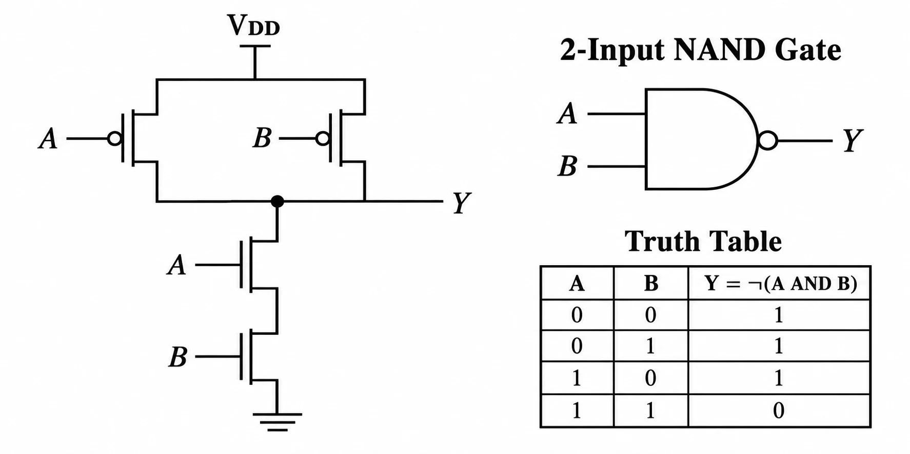
🤖 AI 回覆
我會在 VDD 分支與右側 PMOS 接到輸出線的地方補上圓點，保留原有的輸出接點圓點。這次電晶體電路中應該剛好有三個實心接點圓點。
圖片生成提示詞｜第 08 版（AI 實際送出的英文原文）
Precisely edit this complete circuit figure; preserve all layout, typography, wires, transistor symbols, NAND symbol and truth table. Add exactly TWO missing solid black circular junction dots of the same size as the existing dot: (1) at the T junction where the vertical VDD supply wire meets the top horizontal wire feeding the parallel PMOS sources, approximately x497 y156 in the 1774x887 original; (2) at the T junction where the RIGHT PMOS drain vertical wire meets the horizontal Y output wire, approximately x711 y393. KEEP the existing solid dot at x540 y393 where the NMOS branch meets the horizontal output wire. Final transistor circuit must have exactly THREE filled junction dots: VDD T branch, NMOS/output T branch, right PMOS/output T branch. No filled dot at the series NMOS midpoint or at any two-wire elbow. The hollow inversion bubbles on PMOS gates and logic symbol must remain hollow. This is a minimal edit: only add the two specified filled dots, do not redraw or change anything else.紅色標記對應的修正：「請改用另一種符號表示布林運算式。」
- ①要改寫的布林式：¬(A AND B) 改成上橫線表示法
展開第 08 版的生成提示詞看看：它寫明「只加兩個點」「大約在座標 x497 y156 與 x711 y393」「其他都不要改」。指出位置、限定修改範圍，是小幅修圖最有效的說法。
🤖 AI 回覆
已在 VDD 分支和右側 PMOS 輸出分支補上兩個圓點，三個導線分支都有實心圓點了。
04布林符號與繪圖風格：把滿意的做法存成規則
圖畫對之後，使用者換一種布林式寫法，並請 AI 把整套畫法記下來。後面的 XOR 圖都沿用這套規則。
🧑 使用者提示
請改用另一種符號表示布林運算式。
原始英文Apply another symbol style to represent Boolean equations.
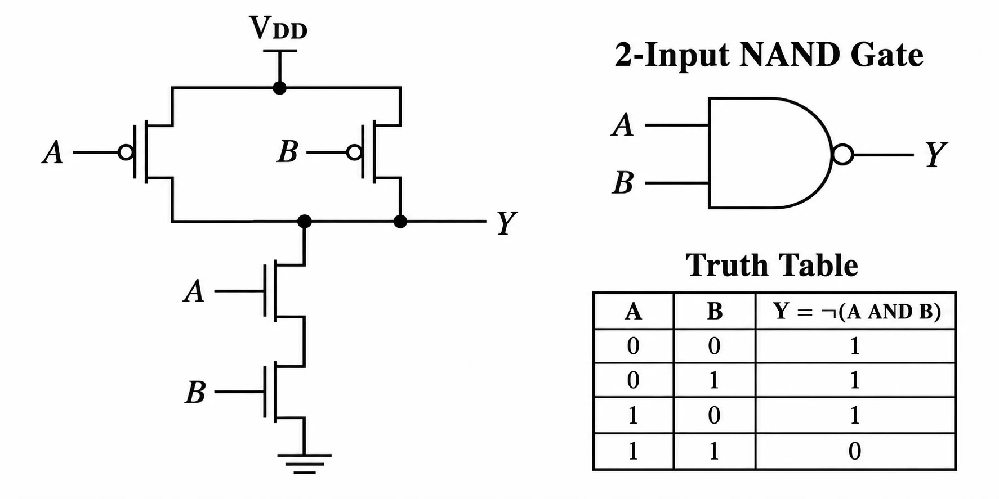
🤖 AI 回覆
我會在真值表標題改用 Y = ：用「·」表示 AND，上橫線表示 NOT。
圖片生成提示詞｜第 09 版（AI 實際送出的英文原文）
Make a minimal precise edit to the supplied NAND circuit figure. Change ONLY the Boolean equation text in the third truth-table column header. Replace 'Y = ¬(A AND B)' with conventional Boolean algebra notation: Y = an OVERBAR over the entire product A · B. Render Y = followed by A centered multiplication dot B, with ONE continuous horizontal overbar spanning BOTH A and B and the dot. The overbar means the complement of the entire AND product. Use clear professional math typography and center this formula within its existing header cell. Preserve every other feature exactly: all three filled junction dots (VDD branch, center output branch and right PMOS/output branch), all transistor wires, hollow inversion bubbles, NAND logic symbol, title, table borders, labels and four truth-table rows. Do not change gate style or circuit layout.🤖 AI 回覆
已更新為 Y = ：點代表 AND，上橫線代表 NOT。
🧑 使用者提示
請記住，以後畫 CMOS 電路圖、邏輯符號和布林運算式時，都使用這個風格。
原始英文Remember to draw CMOS schematics and logic symbols/equations in this style.
🤖 AI 回覆
已保存這個偏好：黑白線條；三條以上導線交會處畫實心圓點；反相泡泡畫空心；布林式用「·」表示 AND、上橫線表示 NOT。以後的 CMOS 圖都會沿用。
這一步就像替 AI 建立一份 Skill（技能說明）：把確認做對的方法存下來，下次不必重講一遍。你也可以替自己常畫的圖表整理一份繪圖規則。
05傳輸閘 XOR：先修功能錯誤，再修外觀
有了繪圖規則，使用者改請 AI 畫 XOR 邏輯閘。這次出現兩種不同等級的錯：一種讓電路不能運作，一種只是不好看。
🧑 使用者提示
請把 XOR 邏輯閘的電路圖、邏輯符號和真值表畫在同一張圖中。
原始英文Draw an XOR gate schematic, symbol, and truth table in one figure.
🤖 AI 回覆
我會沿用剛建立的風格：左邊是 CMOS 電路，右邊是 XOR 符號與真值表。
圖片生成提示詞｜第 10 版（AI 實際送出的英文原文）
Create an accurate educational figure for a TWO INPUT XOR GATE, clean black lines on white background, serif math lettering matching textbook CMOS figures. Landscape layout. Left: clearly drawn CMOS transmission-gate XOR schematic, implementing Y = A-bar B + A B-bar with exactly eight MOS transistors: two CMOS inverters generating A-bar and B-bar (each inverter PMOS to VDD and NMOS to ground with tied gates), and two transmission gates each containing parallel PMOS and NMOS channels. First transmission gate connects B to Y, NMOS control A-bar, PMOS control A (enabled when A=0). Second transmission gate connects B-bar to Y, NMOS control A, PMOS control A-bar (enabled when A=1). Label all four control inputs clearly. Transmission-gate branches join output Y. Include clear VDD and ground at the inverter sources. Draw transistor symbols correctly: hollow gate bubbles only on PMOS, no bubbles on NMOS. Filled junction dots at EVERY electrical wire branch with three or more segments, no dots on two-wire elbows or simple series connections. No ambiguous crossing connections. Title left schematic 'CMOS XOR (8 transistors)'. Upper right: standard XOR logic symbol, OR-shaped gate with the extra curved line behind its input side, inputs A and B, output Y without an inversion bubble. Main figure title '2-Input XOR Gate'. Under symbol show Boolean equation Y = A ⊕ B = A-bar · B + A · B-bar, actual overbars above individual complemented letters. Lower right: clear truth table heading 'Truth Table', columns A B Y = A ⊕ B, rows 0 0 0; 0 1 1; 1 0 1; 1 1 0. Prioritize electrically correct readable wiring and precise symbols. No decorative elements.紅色標記對應的修正：AI 自己發現，第 11 版修正（使用者沒有另外下指令）
- ①這條線把 Ā 與 B̄ 兩個輸出接在一起（短路）
🤖 AI 回覆
第一版把兩個反相器的輸出錯接在一起。我會修正，讓 與 維持兩個獨立訊號。
圖片生成提示詞｜第 11 版（AI 實際送出的英文原文）
Precisely fix the supplied XOR figure. CRITICAL electrical error: the left A inverter output and left B inverter output are incorrectly joined by the long vertical rectangular wire. REMOVE that entire vertical connecting wire at roughly x388 from y391 to y786, and its lower horizontal segment. Each inverter must have its own separate short horizontal output stub pointing right, upper labeled A with overbar, lower labeled B with overbar. They MUST NOT connect to each other. Use those net names as implicit connections to the transmission-gate labels; do not add wires from inverters to transmission gates. Preserve all eight transistors, transistor controls (upper TG PMOS A, NMOS Abar; lower TG PMOS Abar, NMOS A), B and Bbar data inputs, output Y connection, junction dots only at 3-wire branches, XOR gate symbol, Boolean equation and truth table exactly. Minimal correction only to separate the two inverter outputs.紅色標記對應的修正：「這幾個地方的線條畫過頭了。」（附上局部截圖）
- ①傳輸閘電晶體的引線超出通道線
🤖 AI 回覆
已完成 8 顆電晶體的 CMOS XOR 電路、邏輯符號、布林式與真值表；用相同的訊號名稱表示彼此相連。
🤖 AI 回覆
我會移除傳輸閘電晶體符號中超出通道線的多餘線段。
圖片生成提示詞｜第 12 版（AI 實際送出的英文原文）
Precisely clean up the four horizontally oriented MOS transistor symbols inside the two transmission gates in this XOR figure. Their source/drain vertical lead segments currently protrude past the horizontal channel line, forming extra dangling short vertical strokes inside the blank space between the PMOS and NMOS. REMOVE these protruding excess strokes from all four horizontal transistor channel endpoints. Each source/drain lead must end exactly at its horizontal channel line, forming clean right-angle elbows with NO overshoot beyond the channel. Keep the full horizontal channel between source and drain intact; retain the separate parallel gate line and clear insulating gap. Upper PMOS channel source/drain leads must not extend downward past channel; lower NMOS channel source/drain leads must not extend upward past channel. Apply to both upper and lower transmission gates. Preserve circuit electrical topology, all wires outside these tiny symbol cleanups, all filled junction dots, hollow PMOS gate bubbles, control labels, the two separate inverter outputs, XOR symbol, Boolean formula and truth table. Minimal edit with identical layout and typography.🤖 AI 回覆
已移除四個傳輸閘電晶體符號中突出的線段。
🧑 使用者提示
請把傳輸閘的繪圖規則加進去，供以後畫圖使用。
原始英文Add the pass-gate drawing rule for future drawings.
🤖 AI 回覆
已存成以後畫圖的規則：傳輸閘的源極、汲極引線要剛好停在通道線上，不可突出，閘極與通道之間保留清楚間隙。
兩個輸出接在一起（第 10 版）會讓電路無法運作；線條畫過頭（第 11 版）只影響美觀。先修會改變意思的錯，再處理外觀。
06靜態 CMOS XOR：AI 自己檢查，你仍要核對
最後一張圖比較複雜，有 12 顆電晶體。這一段使用者只下了一次指令，後面三次修正都是 AI 檢查自己的圖後提出的。
🧑 使用者提示
請再畫一個雙輸入 XOR 邏輯閘，這次不要使用傳輸閘。
原始英文Draw another two-input XOR gate without using pass gates.
🤖 AI 回覆
我會畫 12 顆電晶體的靜態 CMOS XOR，附上邏輯符號、布林式與真值表。
圖片生成提示詞｜第 13 版（AI 實際送出的英文原文）
Draw a technically accurate educational figure '2-Input XOR Gate — Static CMOS', black lines on white background, serif mathematical lettering, landscape with roomy readable layout. This MUST be full complementary STATIC CMOS, NO pass gates or transmission gates. Exactly 12 MOSFETs total: 8 in main XOR network, 4 in two separate small CMOS inverters generating Abar and Bbar. MAIN SCHEMATIC on left: top pull-up network from VDD to output Y consists of TWO parallel-PMOS groups IN SERIES. First group: PMOS gate A and PMOS gate B in parallel from VDD to internal node P. Second group: PMOS gate Abar and PMOS gate Bbar in parallel from P to Y. Thus top has 4 PMOS. Bottom pull-down network from Y to GND consists of TWO SERIES-NMOS branches IN PARALLEL: left branch upper NMOS gate A then lower NMOS gate B; right branch upper NMOS gate Abar then lower NMOS gate Bbar. Thus bottom has 4 NMOS. Gates have text net labels rather than long control wires. Clearly label overbar signals using actual overbars. Adjacent to main network show two separate small conventional 2-transistor CMOS inverters, inputs A and B, outputs Abar and Bbar respectively, each PMOS connected to VDD and NMOS to ground; do NOT join the inverter outputs. Use exactly this network, no extra transistors. PMOS gate bubbles hollow, NMOS no bubbles. Filled wire junction dots at EVERY branch where 3 or more wire segments meet; no dots at simple two-wire corners or series nodes without branches. Channels and source/drain leads form clean elbows with no dangling protruding strokes; gate-channel insulating gaps remain clear. Upper right standard XOR logic symbol (OR outline with extra input curved line), inputs A B and output Y, no output bubble. Beneath it equation Y = A ⊕ B = Abar · B + A · Bbar using overbars over individual letters. Lower right truth table columns A B Y, rows 0 0 0; 0 1 1; 1 0 1; 1 1 0. Text label '12 transistors'. Prioritize correct topology and junction dots, readable transistor gate labels and conventional simplified CMOS symbols.紅色標記對應的修正：AI 自己發現，第 14 版修正（使用者沒有另外下指令）
- ①四顆 PMOS 被畫成全部並聯；應該是兩組並聯再串聯
- ②多餘圓點：NMOS 串聯點只有兩條線
- ③多餘圓點：電源線的端點不是分支
- ④沒有用到的線頭
🤖 AI 回覆
上拉網路需要修正：兩組並聯的 PMOS 必須再串聯起來。我也會移除 NMOS 串聯點上不該有的圓點。
圖片生成提示詞｜第 14 版（AI 實際送出的英文原文）
Correct the main LEFT transistor schematic in this figure. Current PMOS network is WRONG: all four PMOS are in parallel. Replace it with TWO ROWS of PMOS pairs: top row two PMOS gates A and B in PARALLEL between VDD bus and middle internal bus P. Bottom row two PMOS gates Abar and Bbar in PARALLEL between middle bus P and lower bus Y. This creates two parallel groups IN SERIES, with four PMOS total. Explicit stack of top pair above bottom pair, not all side-by-side. Retain bottom NMOS network two parallel branches each with 2 NMOS in series (left A then B, right Abar then Bbar). Remove dots at the two NMOS intermediate series nodes (only two wires meet). Remove any dangling unused wire stubs. Filled dots ONLY at every true 3-or-more wire junction, never at supply endpoints or unbranched two-wire series nodes. Also remove filled dots at tops of the two small inverter VDD wires (endpoints), and add filled dots to each inverter input T-junction where input wire joins the two gate leads. Keep all 12 transistors, all hollow PMOS bubbles, clear separate inverter outputs, XOR symbol, equation and truth table intact. Expand left area vertically or fit the 4 PMOS in two distinct rows above the 4 NMOS. Correct electrical topology is paramount.紅色標記對應的修正：AI 自己發現，第 15 版修正（使用者沒有另外下指令）
- ①反相器沒接好：輸入只接到 PMOS，NMOS 的閘極沒有接
- ②漏畫圓點：VDD、P 節點下方與 GND 的分支
🤖 AI 回覆
主電路已經正確。接下來把兩個輸入反相器接好：每個輸入都要同時接到兩顆電晶體的閘極，並修正其餘圓點。
圖片生成提示詞｜第 15 版（AI 實際送出的英文原文）
Make these exact corrections to the supplied figure while preserving its main XOR network topology, symbols, equation and truth table. 1. Repair each small inverter in the middle: input A must connect to BOTH PMOS and NMOS gates through a vertical common gate wire left of the transistors; input B likewise. Draw input A or B wire to middle of the vertical gate wire, with a filled T-junction dot. Vertical common gate wire branches to the PMOS gate bubble at top and to NMOS gate (no bubble) below. Current isolated dot on PMOS input alone is wrong: remove it. These must be conventional functional 2-transistor CMOS inverters, not disconnected NMOS gates. Keep their output Abar and Bbar separate and correctly labeled. 2. Add missing filled dots at three specific main-network T junctions: where VDD vertical wire meets top PMOS source bus, where vertical P interconnect meets lower PMOS source bus, and where GND vertical wire meets bottom NMOS source bus. Keep existing dot at upper P junction and output Y junctions. No filled dots at wire endpoints, two-wire elbows, or series NMOS midpoints. All other elements unchanged.紅色標記對應的修正：AI 自己發現，第 16 版修正（使用者沒有另外下指令）
- ①漏畫圓點：P 節點下方的分支
🤖 AI 回覆
圖片已更新反相器的閘極連線，並補上電源與接地的接點圓點。
圖片生成提示詞｜第 16 版（AI 實際送出的英文原文）
Minimal exact one-dot edit ONLY. In the LEFT main XOR schematic add ONE filled black circular junction dot at the T junction where the vertical wire descending from internal node P meets the horizontal source bus above the LOWER PMOS pair (gates Abar and Bbar). Location approximately x370 y388 in this 1536x1024 image. There is currently already a dot just above it at x370 y350; retain it and add the missing dot at x370 y388. Match existing dot radius. Preserve literally every other line, label, transistor symbol, inverter, equation, truth table and dot. Do not redraw other elements.🤖 AI 回覆
完成 12 顆電晶體的靜態 CMOS XOR 圖，包含邏輯符號、布林式與真值表。
AI 這次自己抓出三個問題，但第 15 版仍漏了一個圓點，是再修一次才補上的。最後一版還是要由懂這個領域的人逐項核對。
07從這段紀錄帶走的修正方法
把 16 個版本的修正整理起來，可以歸納出幾種好用的說法。換成你自己的圖表時，也可以照著用。
| 遇到的問題 | 這段紀錄怎麼說 | 可以借用的做法 |
|---|---|---|
| AI 誤認圖中的元素 | 「那個看起來像二極體的符號是反相器。」 | 直接說「X 其實是 Y」，不要只說「畫錯了」 |
| 不符合專業慣例 | 「只有三條或更多導線交會的分支接點才要畫實心圓點。」 | 把規則寫出來，而不是「修正一下」 |
| 用說的講不清楚位置 | 附上局部截圖：「你還漏了一個接點圓點。」 | 截圖圈出問題處，一張圖勝過一段描述 |
| 修一處卻改壞別處 | 生成提示詞寫明座標與「其他都不要改」 | 要求最小修改，指定只改哪裡 |
| 做對了，想一直沿用 | 「請記住，以後……都使用這個風格。」 | 存成規則或 Skill，下次直接套用 |
- 每一版都看圖本身，不只看 AI 回覆說「已完成」。
- 一次只修一類問題，修完再檢查有沒有改壞別的地方。
- 先修會改變意思的錯（接錯、短路），再修外觀（線條、字型）。
- 把做對的畫法存成規則，下一張圖直接套用。
- 最後版本交給熟悉該領域的人核對，再放進報告或簡報。
這些最後版本只在對話中以目視檢查，沒有做電路模擬。換成你自己的主題時也一樣：圖畫得再漂亮，內容仍要請熟悉該領域的人確認。